My Opportunities App does not provide the standard SAPUI5 footer for Master-Detail applications. Instead, we get this in our detail view (S3):
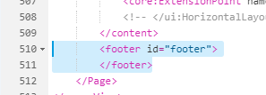The footer is built using a custom logic inside S2 and S3 controllers, that adds the items to a member attribute named oHeaderFooterOptions:
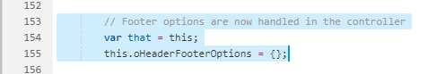Question is: if you want to customize it (say you want to add another button to it), how to do it?
In my case, I'm using the SAP Fiori Cloud Trial instance, but you'll use your own landscape to create your extension project. On FCT, use the following steps below:
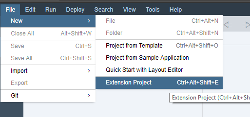
You might want to select a different option here for you on-premise instance.
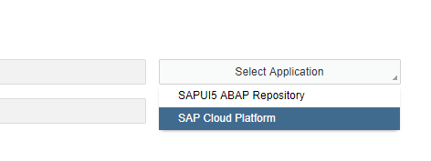
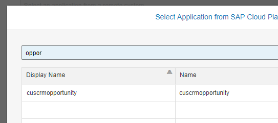
Write the name of your extension project and click Next.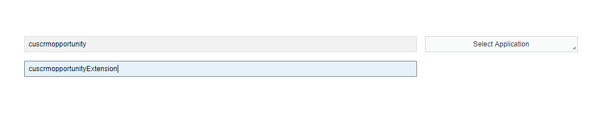
Check this item and click on Finish.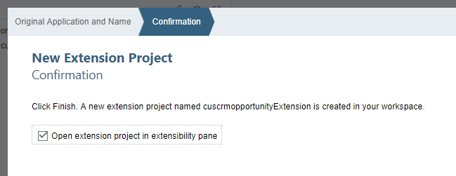
In the Extension Pane pop-up, extend the S3 (details) controller.
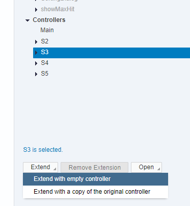
Click on Open Extension Code.
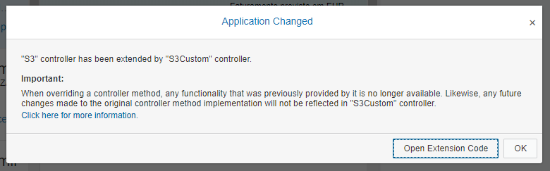
In your extension controller, locate the extendHeaderFooterOptions function.
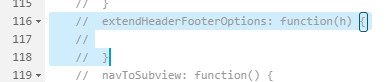
This is the function you should be using to customize your footer content. If you evaluate the h variable in debug mode, you'll see an array of buttons here:
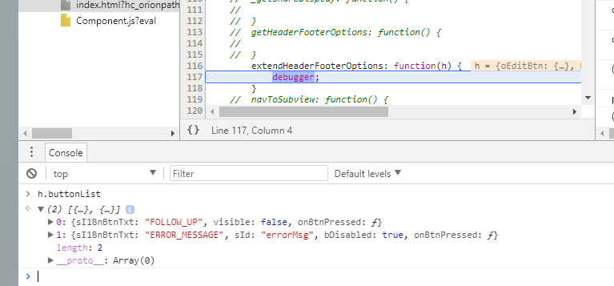
We'll create a copy of the second button (we could create an empy object as well) and apply our own settings to it. Then, we'll add the new button to this array.
extendHeaderFooterOptions: function(h) {
var oNewButton = Object.assign({}, h.buttonList[1]);
oNewButton.sI18nBtnTxt = "CREATE_OPPORTUNITY";
oNewButton.bDisabled = false;
oNewButton.sId = "createOpportunity";
oNewButton.onBtnPressed = function() { alert("My custom button works!"); };
h.buttonList.push(oNewButton);
}
Save the extension controller.
Now run it from Web IDE and check your footer.
Original footer
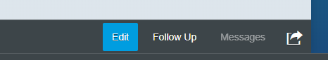
Extended footer
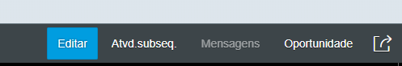
As you have noticed, the button text comes from i18n properties file. We used one that's already available in the standard file. If you want to add your own, check this link where I explain how to extend the Resources file from the extension controller.